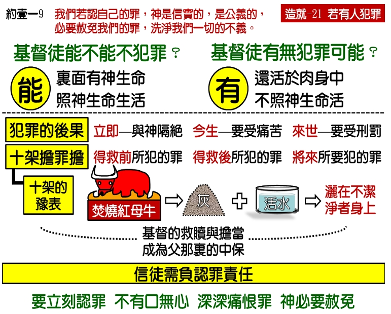

诗歌：726 首、731 首
重要经文：
约翰福音五章十四节：这事以后，耶稣在殿里遇见他，对他说，看哪，你已经痊愈了，不要再犯罪，恐怕你遭遇的更加厉害。
约翰福音八章十一节：耶稣说，我也不定你的罪；去罢，从今以后不要再犯罪了。
箴言二十八章十三节：遮掩自己罪过的，必不亨通；承认离弃罪过的，必蒙怜悯。
纲目要点：
壹 得救以后若再犯罪，会有两个可怕的后果：
一 今生要受痛苦——撒下十二9～13。
二 来世要受刑罚——太十六27，林后五 10。
贰 主担当了一切的罪：
一 强盗临死才信主，主也担当他一切的罪——路二三39～43。
二 主担当我们一切的罪，我们得救后所犯的罪，也包括在里面。
参 从红母牛灰的预表中，看主的死担当我们一切的罪：
一 民数记第十九章是为着应付将来的需要。
二 主耶稣的工作，有一部分就像红母牛的灰一样，所有赎罪的功效都在这里面，全世界的人所有的罪都在这里面，血也在这里面。
肆 需要认罪：
一 信徒犯了罪，好像有一根剌在他里面一样。
二 这不安就是圣灵的工作，就应该认罪。
伍 在父那里有一位中保：
一 每一个弟兄姊妹应该在主面前不犯罪。
二 一个人如果不幸犯了罪，千万不要拖，越快越好，要立刻认罪，立刻对神说，『我有罪了！』认罪就是我们自己对自己的审判。我们若认自己的罪，神是信实的，是公义的，必要赦免我们的罪，洗净我们一切的不义。
信息选读：
得救以后的犯罪问题
基督徒是不应该犯罪的，是断乎不可仍在罪中活着的，那么，基督徒能不能不犯罪呢？能！基督徒能不犯罪，因为在我们里面有神的生命。这个生命是不犯罪的，这个生命是不能容让一点罪的；神如何圣洁，这个生命也如何圣洁。这个生命在我们里面，叫我们对于罪有特别敏锐的感觉；如果我们照着这个生命的感觉而活，如果我们活在这个生命的里面，我们就能不犯罪。
可是，基督徒也有犯罪的可能，因为我们还在肉身之中，如果不是随从圣灵而行，如果不是活在生命里，就随时随地有犯罪的可能。加拉太六章一节说，『弟兄们，即使有人偶然为某种过犯所胜，…』约翰壹书二章一节说，『我的孩子们，…若有人犯罪，…』可见基督徒仍有『偶然为某种过犯所胜』的可能，仍有犯罪的可能。约壹一章八节有话说，『我们若说自己没有罪，便是自欺。』十节又说，『我们若说自己没有犯过罪，便是以神为说谎的。』所以，在经历上，基督徒是有不幸犯罪的事。
得救以后若再犯罪，会有两个可怕的后果：
第一，在今生要受痛苦。得救以后若再犯罪，必定要吃罪的后果。像林前五章所说的，要把这样的人交给撒但，败坏他的肉体，这是一个很大的痛苦。有的罪犯了以后，你若悔改、认罪，神虽肯赦免你，血虽能洗净，但是罪的后果却无法避免。大卫娶了乌利亚的妻子，虽然耶和华除掉了他的罪，可是刀剑必永不离开他的家。(撒下十二 9～13。）哦，弟兄姊妹，罪像毒蛇一样，绝对不是好玩的，如果被它咬一口，一定要受痛苦。
第二，在来世要受刑罚。如果基督徒犯了罪，在今生没有对付好，那么到了来世，还得去受对付。主再来的时候，『祂要照各人的行为报应各人。』（太十六 27。）保罗说，『因为我们众人，必要在基督的审判台前显露出来，叫各人按着本身所行的，或善或恶，受到应得的报应。』（林后五 10。）
除了这两个可怕的后果以外，还有一个立即发生的结果，就是断绝了与神的交通。基督徒能与神交通，是最荣耀的权利，也是最大的福气。可是，他如果犯了罪，就立刻失去了与神的交通。本来他见了神的儿女是很亲热的，现在不亲热了，好像有了一层隔膜。本来祷告、读圣经是非常有味道的，现在没有味道了，摸不着神了。本来对于聚会是觉得非常宝贵的，一次不去，好像受了极大的损失，可是现在聚会也觉得平淡了，好像不去也无所谓。甚至于见了神的儿女，是想躲避而不是想亲近，从前的那一种光景完全改变了。
主担当了一切的罪
主在十字架上担当了你一切的罪。十字架上的那个强盗，到临死以前才信主，主也担当他一切的罪。（路二三 39～43。）换句话说，主在十字架上，乃是担当我们一生一世的罪。虽然当我们得救的时候，在经历上，我们只觉得已往所犯过的罪得到赦免而已，可是在事实上，主担当了我们一切的罪，连我们得救之后所犯的罪，也包括在里面。我们必须先明白了这个事实，才能明白恢复交通的路。
红母牛灰的预表
在旧约里，罪人需要到神面前去献祭。但是，如果有一个人，已经献上祭，而又摸着污秽的时候，他在神面前是不洁净的，与神不能交通，那么应该怎么作呢？要为这不洁净的人，拿些红母牛的灰，放在器皿里，倒上活水，调成除污秽的水，洒在他身上，他的污秽就被除去，他的罪就得赦免。一个以色列人把牛羊带到神面前去献上赎罪祭，那是因为他知道他有罪，但红母牛是另外一件事。红母牛的被烧，不是为着他所知道的已往的罪，乃是为着他将来所有的一切污秽。红母牛的被烧，不是为着已过的罪，红母牛的被烧，乃是为着将来的罪。
这就给我们看见了主耶稣救赎工作的另外一方面。主耶稣的工作，有一部分就像红母牛的灰一样，所有赎罪的功效都在这里面，全世界的人所有的罪都在这里面，血也在这里面。到将来，任何的时候，如果你有了污秽，你摸着了不洁净的东西，你不需要再宰一只红母牛去献给神，只要把这一只已经献上的红母牛的灰所调和的水洒在身上，就够了。换句话说，不需要主替我们再作第二次的工作了。在祂救赎的工作里，已经有预备，是为着我们将来一切的污秽，一切的罪。在祂的救赎里，都已经完全预备好了。
灰是什么意思呢？在圣经里，灰是表明最末后的东西。牛也好，羊也好，焚烧以后的末了一个形状，就是灰。灰是最靠得住的，灰是不朽坏的。我们不能叫灰朽坏，不能叫灰消灭。灰，是最末后的阶段。
红母牛烧成灰，就是预表主的赎罪里所包括的永远不更改的功效。主替我们作的赎罪的工作，是最靠得住的。
在父那里有一位中保
比方说，一个孩子在外面作了一件不好的事，回到家里去，只要父亲不与他说话，他在家里就觉得味道不对，他不能与父亲有亲密的交通，他知道在里面有了间隔，这就是失去交通的痛苦。
恢复的路只有一条，就是我们到神面前去承认我们的罪，并且也相信主耶稣基督已经作了我们的中保，已经担当了我们一切的罪。我们要在神面前谦卑的承认我们的失败、我们的不行；仰望主叫我们下一次走在路上的时候，能够不骄傲、不随便，能够学习在那里看见，我们不比任何人好，在任何的地方，都有跌倒的可能，求神怜悯我们，叫我们一步一步的往前去。这样一认罪，我们在神面前就立刻恢复了交通，已往所失去的喜乐和平安也都回来了。
课程复习：
一 人得救以后若再犯罪，会有哪两个可怕的后果？
二 主如何担当了我们一切的罪？
三 请从红母牛灰的预表中，说明主的死如何担当了我们一切的罪？
四 信徒犯了罪，好像有一根剌在他里面一样，这时该有怎样的态度?
五 我们如何从与神失去交通的痛苦中得着恢复？
